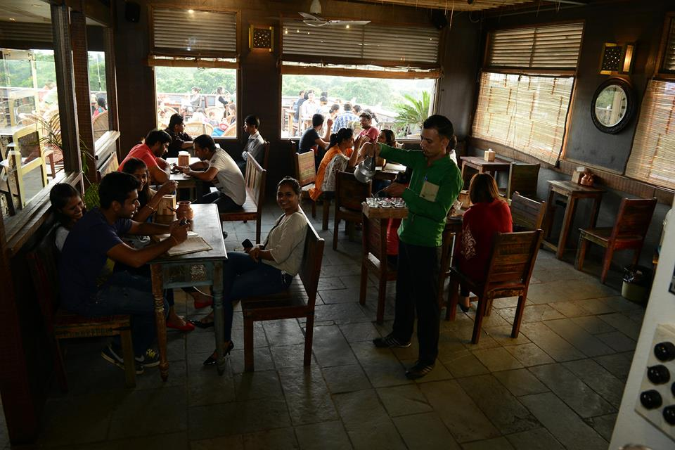
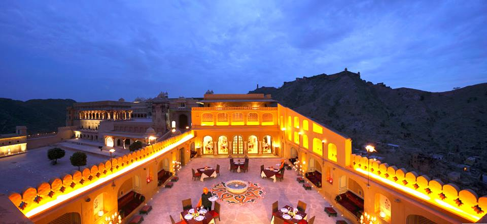
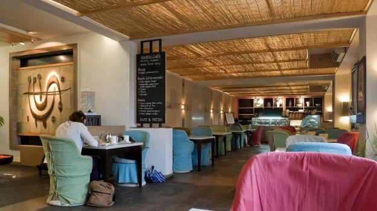
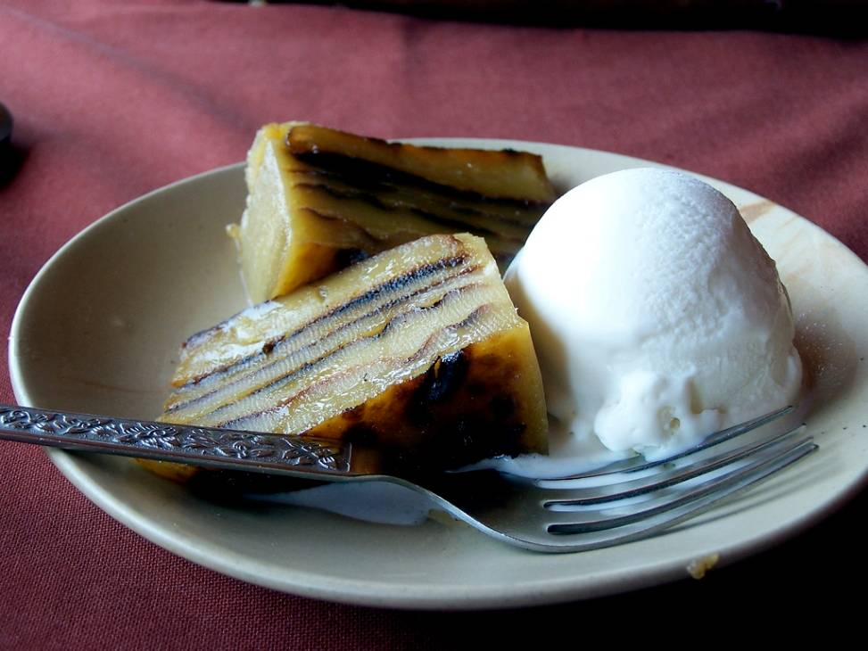
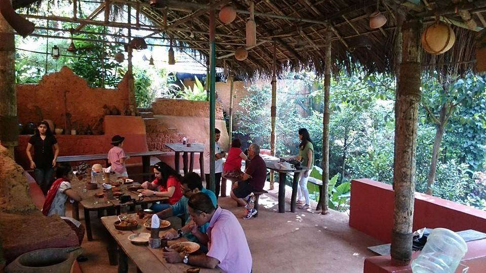

SIGN IN/SIGN UP
follows us: TWITTER | FACEBOOK | INSTAGRAM
.
.
JAIPUR
1. Tapri Central
This lively cafe is definitely a hotspot for the young lot. This easygoing little place serves home-style quick grub without a major wound to your wallet. The interiors are edgy and the menu is very creative with a new-wave of fusion treats like Flowery Flirt Tea, Cheese Puchkas and Pesto Khakra Pizzas. Familiar ingredients are thrown together in surprising combinations. The Ishpecial Vada Pav with cheese and chutneys is a real steal.
Address: B4 E, 3rd Floor, Surana Jewellers, Opposite Central Park, Prithviraj Road, C Scheme

2. 1135 AD
This restaurant lives up to its name. The imperial ambience with regal chairs,
gold enameled walls and magnificent tables takes you back in time.
The elegant decor and romantic outdoors create a perfect ambience to watch the sun go down
in style. The stunning view makes you forget yourself and so does the food.
Their menu comprises a mix of Mughlai, Rajasthani and North Indian delights.
Food is served on silver plates with silver cutlery to reflect royalty.
The Lal Maas really stood out. It was so tender that the meat was falling off at the bone.
The Jungli Maas, Sula Biryani and Paneer Aftab certainly hit the spot.
Address: Level 2, Jaleb Chowk, Near Sheela Mata Temple, Amer Palace, Amer

3. Anokhi Cafe
This cheerful bistro with nostalgic decor is a local favourite. There is something about its monastic simplicity. It’s a great place for a quick escape with the healthiest food in town. The café serves freshly baked breads, well-dressed salads, loaded sandwiches and cheesecakes with organic ingredients grown locally at their farm. The Coffee Cake with coffee cream filling and Khao Suey are worth going back for. Wash it all down with one of their freshly squeezed juices. This place is ideal for those feeling weary after a hectic tour.
Address: C 11, 2nd Floor, KK Square, Prithviraj Road, C Scheme

GOA
Dine like royalty
For an aristocratic experience, head to Palacio do Deao, a restored 18th-century palace in Quepem, Chandor. Once the home of the town's founder, the mansion is located on the banks of the Kushavati River and surrounded by lush gardens. Its restaurant serves vegetarian and non-vegetarian dishes from the kitchens of the Indo-Portuguese aristocracy, in beautiful surroundings. The prixe fixe lunch includes seasonal delicacies cooked with fresh local vegetables, fruits and fish. Don't forget to ask for their delicious homemade bebinca, a layered dessert made with eggs and coconut milk.
Address: Palacio do Deao: Opposite Holy Cross Church, Quepem, Goa 403705. Phone: +91-832-2664029, +91-9823175639

Take a spice plantation tour
Several spice plantations clustered around Ponda in South Goa offer an introductory tour, followed by a traditional lunch. This is an interesting way to learn about the organic cultivation of spices such as pepper, cinnamon, cardamom and nutmeg; trees such as cashew and areca nut; and fruits such as jackfruit, custard apple, mango and pineapple. There are three major spice plantations in this area: the Tropical Spice Plantation, the Savoi Plantation and the Sahakari Spice Farm. The Savoi Plantation offers Goan Saraswat cuisine, which makes extensive use of kokum, tamarind and coconut. Tour highlights include a visit to its cashew processing factory and feni distillation unit, as well as a demonstration of betel-nut plucking.
Address: Savoi Plantation: Ponda, Goa 403401. Phone: +91-832-2340272
Sahakari Spice Farm: Ponda Belgaum Highway, Curti, Ponda, Goa 403401. Phone: +91-832-2312394
Tropical Spice Plantation: House No. A-14, Arla Bazaar Keri, Ponda, Goa 403401. Phone: +91-832-2340329

KERALA
1. Shala Restaurant
Literally, Ma ke haath ka khaana! The very USP of this place is home cooked food by the local housewives. So, you can expect delicious home cooked food in a lovely set up. It’s a small place and it shouldn’t come as a surprise if you see a long queue waiting outside to get a table here.
Speciality: Malabar prawn curry, kingfish steak, and the vegetarian special (which changes daily)
Address: Peter Celli Street, Fort Kochi, Kochi

2. Hotel Annapoorna
All the vegans out there may rejoice! Hotel Annapoorna is a pure veg restaurant serving the best Mallu breakfast and other traditional food.
Speciality: Puttu, Masala Dosa, Idli (all veggie favourites, just name it)
Address: Perumbavoor, Kerala

Legal Notice | Tours and travel private limited Limited